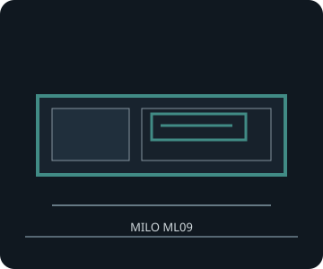

[ MILO ML09 // LOW-PROFILE HTPC ]
SilverStone Milo ML09
350 × 99 × 205 mm (W × H × D), about 7 L; a Mini-ITX/Mini-DTX slim enclosure with SFX power and low-profile dual-slot card support.

FITMENT CAVEAT: This record describes the named model only. Published maxima can depend on revision, brackets, fan/radiator position, PSU cable routing and drive configuration; verify the exact manual and parts before purchase or assembly.
Specifications & fit
| Exact model | SilverStone Milo ML09 |
|---|---|
| Motherboard sizes | Mini-ITX (170 × 170 mm) or Mini-DTX (203 × 170 mm); slim layout places drive and expansion brackets close to the board. |
| PSU type and fit | SFX only; ATX and SFX-L are not the listed fit. Confirm PSU cable exits and modular plugs against the multipurpose drive bracket. |
| GPU length and thickness | Low-profile, dual-slot card up to 175 mm long and 74 mm wide/high (SilverStone's card envelope); full-height cards do not fit. Two low-profile expansion positions. |
| CPU cooler height | 37–70 mm, depending on the multipurpose bracket: up to 70 mm with that bracket removed; about 47 mm with a 120 mm fan or slim ODD installed; about 37 mm with a 3.5-inch drive installed. |
| Radiator and fan options | One 120 mm top fan included; up to two optional 80 mm side fans. No radiator mounting position is specified by SilverStone; use low-profile air cooling unless a custom fit is independently verified. |
| Storage clearances | Multipurpose bracket accepts a 9.5/12.7 mm slim tray-type optical drive, 3.5-inch drive, or 120 mm fan depending on configuration. Internal storage supports up to four 2.5-inch drives in bracket-dependent layouts; a 3.5-inch drive displaces smaller mounts. Check bracket installation against the CPU cooler and PSU cables. |
| Compatibility notes | The GPU must be low-profile and dual-slot. Cooler height changes with the exact drive/ODD/fan bracket setup; do not combine the 70 mm cooler maximum with the installed 3.5-inch or optical-drive configuration. |
Compatibility & preservation notes
The GPU must be low-profile and dual-slot. Cooler height changes with the exact drive/ODD/fan bracket setup; do not combine the 70 mm cooler maximum with the installed 3.5-inch or optical-drive configuration.
- Record the case model/SKU, revision, included riser, brackets and manual version before changing hardware.
- Measure the actual GPU shroud, power connectors, cooler, radiator/fan stack and cable bend radii; do not assume listed maxima can coexist.
- Keep original drive trays, standoffs, fasteners, fan brackets and panel hardware with the enclosure.
Manufacturer sources
- SilverStone — Milo ML09 product specificationsManufacturer dimensions, supported hardware and bracket-dependent limits.
- SilverStone — Milo ML09 manual (PDF)Manufacturer installation guide for the multipurpose bracket and cooler clearances.
Sources are manufacturer product documentation and the model-specific manual; consult the matching revision for assembly dimensions.